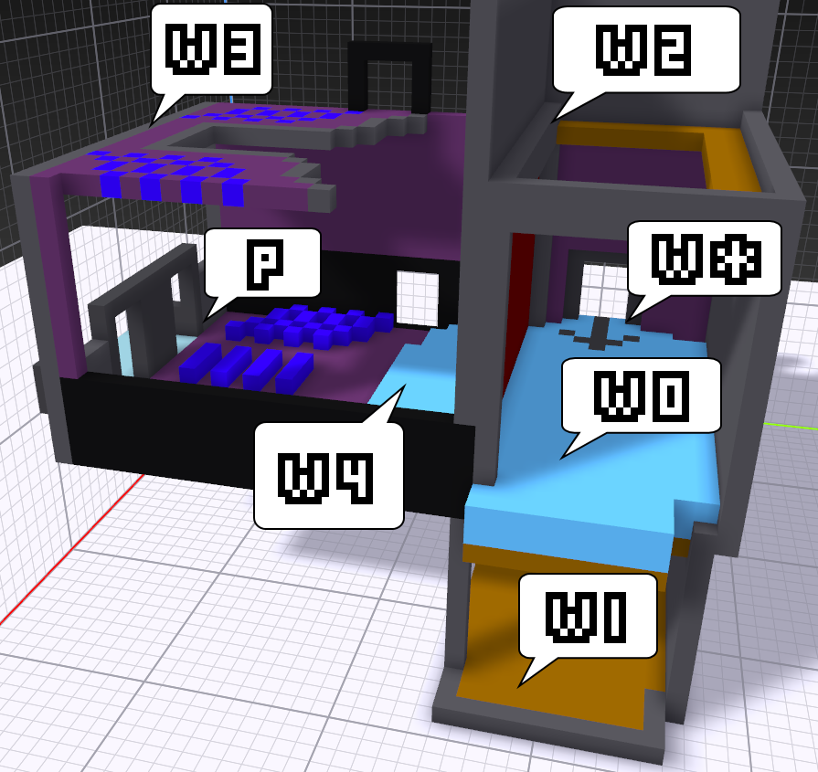

World Progression

| World Name | Theme | BossLens |
|---|---|---|
| W0. The Backworld (Prologue, Hub, & Epilogue) | Being a creative designer, as well as business and market, but also the player-centric Audience motif--as is relevant to both of these sides and manifest in the theater/chairs needing to be filled. (Drawing on my lesson that even a free educational Twitter ultimately seeks exposure just as sleazy Twitter does.) | King-Fringexander |
| W1. The Sekai-kan World of Music | Terrain and worldsense as a foundation for everything in the worlds that follow (what sets apart video and board games for me, plus the draw in Vocaloid songs). | Geo-Report |
| W2. The Gameplay World of Tech | Mechanics as ways to overcome the interesting things that arise from W1, being the nuts and bolts in the rafters. | Oxenfree |
| W3. The Sonzai-kan World of Art | Platinum Death's dantavasy vs. what exactly one considers a character vis-a-vis a player and an author. | Dantasy |
| W4. The Story-sense World of Plot | Though there are a myriad ways to design a plot, ultimately it boils down to a flow of motivations. | Slaying the Dragon |
Rooms: one room = one FoeLens world = one toolkit cell.
Each room contains one or more eye portal entrances that allow you to "look through" the design lens for that room that may move about on Sequencers--think Break the Targets.
If there are more than one, they may take you to different [potentially walled-off] sections inside the singular FoeLens world for that room, e.g. player typologies.
{kind=link}
Note a title card shows up when enter areas or activate a FoeLens, similar to the below games but more out of the way like the former.